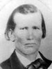
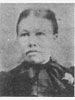
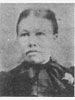

The Family of John and Nancy Ann Bach(e) Buchanan
Home
Histories
Charts
Photos
Maps
Restricted
News
Info
Contact
John Buchanan  11 Jan. 1786 - 1839 Married 12 Apr 1812 to Nancy Ann Bach(e) (23 Feb. 1790 - 17 Aug. 1884)
|   |
| Jane Buchanan 1 July 1813 - 5 Feb. 1848 Married Alexander B. Davis 19 July 1831 The 1st child of John Buchanan and Nancy Ann Bach(e) |
| Elizabeth Buchanan 11 July 1815 - 23 June 1913 Married Joseph W Coolidge 17 Dec. 1835 The 2nd child of John Buchanan and Nancy Ann Bach(e) |
| Lorenzo Dow Buchanan 14 July 1817 - abt. 1833 The 3rd child of John Buchanan and Nancy Ann Bach(e) |
|  | Emmaline Buchanan  1 Mar. 1820 - 4 Nov. 1899 Married Simmons Philander Curtis 4 July 1840 The 4th child of John Buchanan and Nancy Ann Bach(e) |
| * | Catherine Buchanan Apr. 1822 - abt. 1837 The 5th child of John Buchanan and Nancy Ann Bach(e) |
| 12 | John Buchanan 25 Jan. 1825 - 11 Oct. 1897 Married Adeline Coons 23 Feb. 1851 Married Sarah Wilkinson 28 Apr. 1866 The 6th child of John Buchanan and Nancy Ann Bach(e) |
| Mary Ann Buchanan 5 Aug. 1827 - Married Preston Guard 28 Oct. 1858 The 7th child of John Buchanan and Nancy Ann Bach(e) |
| * | Eleanora Buchanan 1828 - abt 1838 The 8th child of John Buchanan and Nancy Ann Bach(e) |
 1 1 2 2 34 34 |
Archibald Waller Overton Buchanan 9 Feb. 1830 - 7 May 1915 Married Helen Amelia Whiting Married Mary Ann Brown Married Ann Marie Larsen Married Caroline Sophia Sorensen
The 9th child of John Buchanan and Nancy Ann Bach(e) |
| Martha Maria Buchanan 7 Mar. 1833 - 25 Dec. 1895 Married Reuben Nurce Howell 16 Mar. 1861 The 10th child of John Buchanan and Nancy Ann Bach(e) |